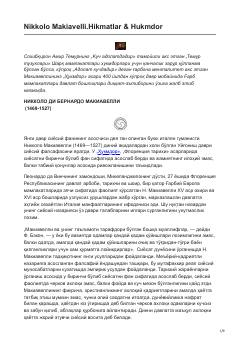

NMNikkolo Makiavellining siyosiy qarashlari va hayotiy hikmatlari jamlangan to'plam.
Ushbu asar Uyg'onish davri mutafakkiri Nikkolo Makiavelli hayoti va uning siyosiy qarashlari haqida hikoya qiladi. Kitobda muallifning davlat boshqaruvi, hokimiyat va inson tabiati borasidagi mashhur hikmatlari hamda uning siyosatni fan sifatida asoslab bergan g'oyalari jamlangan.